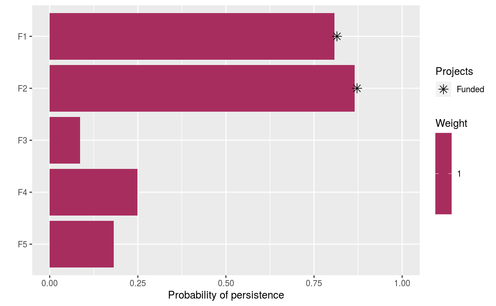

Specify that the Gurobi software should be used to solve a
project prioritization problem. This function can also be
used to customize the behavior of the solver. In addition to the
Gurobi software suite, it also requires the gurobi package to
be installed.
add_gurobi_solver(x, gap = 0, number_solutions = 1, solution_pool_method = 2, time_limit = .Machine$integer.max, presolve = 2, threads = 1, first_feasible = 0, verbose = TRUE)
| x |
|
|---|---|
| gap |
|
| number_solutions |
|
| solution_pool_method |
|
| time_limit |
|
| presolve |
|
| threads |
|
| first_feasible |
|
| verbose |
|
ProjectProblem-class object with the solver added
to it.
Gurobi is a state-of-the-art commercial optimization software with an R package interface. It is by far the fastest of the solvers supported by this package, however, it is also the only solver that is not freely available. That said, licenses are available to academics at no cost. The gurobi package is distributed with the Gurobi software suite. This solver uses the gurobi package to solve problems.
To install the gurobi package, the Gurobi optimization suite will first need to be installed (see instructions for Linux, Mac OSX, and Windows operating systems). Although Gurobi is a commercial software, academics can obtain a special license for no cost. After installing the Gurobi optimization suite, the gurobi package can then be installed (see instructions for Linux, Mac OSX, and Windows operating systems).
# load data data(sim_projects, sim_features, sim_actions) # build problem p1 <- problem(sim_projects, sim_actions, sim_features, "name", "success", "name", "cost", "name") %>% add_max_richness_objective(budget = 200) %>% add_binary_decisions() # build another problem, and specify the Gurobi solver p2 <- p1 %>% add_gurobi_solver() # print problem print(p2)#> #> #> #> #> #> #> #> #> #> #> #>#> Optimize a model with 47 rows, 47 columns and 102 nonzeros #> Variable types: 0 continuous, 42 integer (42 binary) #> Semi-Variable types: 5 continuous, 0 integer #> Coefficient statistics: #> Matrix range [9e-02, 1e+02] #> Objective range [1e+00, 1e+00] #> Bounds range [1e+00, 1e+00] #> RHS range [1e+00, 2e+02] #> Found heuristic solution: objective 1.4456093 #> Presolve removed 16 rows and 12 columns #> Presolve time: 0.00s #> Presolved: 31 rows, 35 columns, 65 nonzeros #> Variable types: 0 continuous, 35 integer (35 binary) #> Presolved: 31 rows, 35 columns, 65 nonzeros #> #> #> Root relaxation: objective 2.190381e+00, 11 iterations, 0.00 seconds #> #> Nodes | Current Node | Objective Bounds | Work #> Expl Unexpl | Obj Depth IntInf | Incumbent BestBd Gap | It/Node Time #> #> * 0 0 0 2.1903807 2.19038 0.00% - 0s #> #> Explored 0 nodes (11 simplex iterations) in 0.00 seconds #> Thread count was 1 (of 4 available processors) #> #> Solution count 1: 2.19038 #> #> Optimal solution found (tolerance 0.00e+00) #> Best objective 2.190380737245e+00, best bound 2.190380737245e+00, gap 0.0000%#> # A tibble: 1 x 15 #> solution status obj cost F1_action F2_action F3_action F4_action F5_action #> <int> <chr> <dbl> <dbl> <dbl> <dbl> <dbl> <dbl> <dbl> #> 1 1 OPTIM~ 2.19 195. 1 1 0 0 0 #> # ... with 6 more variables: baseline_action <dbl>, F1 <dbl>, F2 <dbl>, #> # F3 <dbl>, F4 <dbl>, F5 <dbl># build another problem and obtain multiple solutions # note that this problem doesn't have 100 unique solutions so # the solver won't return 100 solutions p3 <- p1 %>% add_gurobi_solver(number_solutions = 100) # print problem print(p3)#> #> #> #> #> #> #> #> #> #> #> #>#> Optimize a model with 47 rows, 47 columns and 102 nonzeros #> Variable types: 0 continuous, 42 integer (42 binary) #> Semi-Variable types: 5 continuous, 0 integer #> Coefficient statistics: #> Matrix range [9e-02, 1e+02] #> Objective range [1e+00, 1e+00] #> Bounds range [1e+00, 1e+00] #> RHS range [1e+00, 2e+02] #> Found heuristic solution: objective 1.4456093 #> Presolve removed 16 rows and 12 columns #> Presolve time: 0.00s #> Presolved: 31 rows, 35 columns, 65 nonzeros #> Variable types: 0 continuous, 35 integer (35 binary) #> Found heuristic solution: objective 2.1903807 #> Presolved: 31 rows, 35 columns, 65 nonzeros #> #> #> Root relaxation: objective 2.190381e+00, 11 iterations, 0.00 seconds #> #> Nodes | Current Node | Objective Bounds | Work #> Expl Unexpl | Obj Depth IntInf | Incumbent BestBd Gap | It/Node Time #> #> 0 0 - 0 2.19038 2.19038 0.00% - 0s #> Optimal solution found at node 0 - now completing solution pool... #> 0 0 - 0 2.19038 2.19038 0.00% - 0s #> 0 2 - 0 2.19038 2.19038 0.00% - 0s #> #> Explored 240 nodes (37 simplex iterations) in 0.01 seconds #> Thread count was 1 (of 4 available processors) #> #> Solution count 100: 2.19038 2.19038 2.19038 ... 2.19038 #> #> Optimal solution found (tolerance 0.00e+00) #> Best objective 2.190380737245e+00, best bound 2.190380737245e+00, gap 0.0000%#> # A tibble: 1 x 15 #> solution status obj cost F1_action F2_action F3_action F4_action F5_action #> <int> <chr> <dbl> <dbl> <dbl> <dbl> <dbl> <dbl> <dbl> #> 1 1 OPTIM~ 2.19 195. 1 1 0 0 0 #> # ... with 6 more variables: baseline_action <dbl>, F1 <dbl>, F2 <dbl>, #> # F3 <dbl>, F4 <dbl>, F5 <dbl>